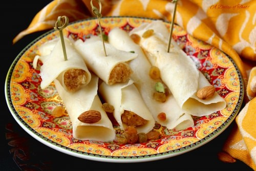

Bengali Rice Crêpes

Bengali Rice Crêpes, or "Pati Shapta," are traditional Bengali treats made from a light batter of semolina, rice flour, and plain flour mixed with milk, water, a pinch of salt, and sugar. The batter is cooked into thin, soft crêpes that have a delicate texture.
These crêpes are often filled with sweet coconut or milk-based fillings and are a popular dessert during festivals like Poush Sankranti, enjoyed for their simple yet rich flavor.
Ingredients
- 2 2/3 oz of semolina
- 2 2/3 oz of rice flour
- 5 1/3 oz of plain flour
- 1 pint of milk
- 1 2/3 fl oz of water
- 1/8 tsp salt
- 2 tbsp of sugar
Steps
- In a bowl, mix together the semolina and flours with milk and water. Add the salt and sugar and whisk until smooth. Cover and leave to rest for 1 hour.
- Meanwhile, make the filling. Bring 500ml of water to the boil with the cinnamon, cardamom and bay leaf. Mix in the coconut and reduce the heat to low. Cook for 15 to 18 minutes, stirring regularly until the coconut has softened and absorbed all the water. Take off the heat and set aside.
- Melt the ghee over a medium heat in a frying pan. Once the ghee has melted, add the coconut and molasses and cook for 8 to 10 minutes on a very low heat, until the molasses has blended with the coconut and the mixture has turned soft but still falls easily off a spoon. Take off the heat and transfer the mixture to a dish and leave to cool for at least 30 minutes.
- Heat a flat griddle pan or cast-iron pan pan over a low heat and brush lightly with oil. Add a small ladle of batter to the pan, swirling as you go, to create a thin crêpe. Cook for 1 to 1 ½ minutes until pale golden on the underside and place roughly 2 tbsp of the coconut filling across the centre in a thick vertical line or log shape.
- Use a spatula to flip over one side of the crêpe to cover the filling and then flip the other side over the covered filling (like an envelope). Repeat until you use up all the batter, greasing the pan after cooking every rice crêpe. Remove from the pan and keep warm as you cook the rest.
- Scatter with finely crushed pistachios and rose petals with some pouring cream on top, if desired. And there you go! Your Bengali Rice Crêpes are ready!